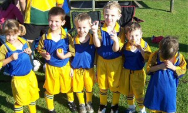
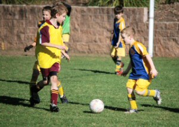
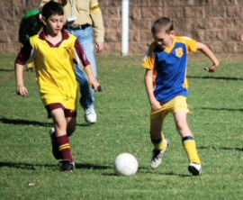
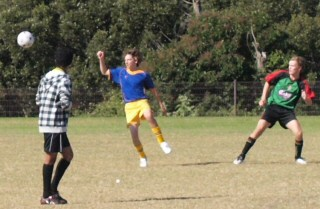
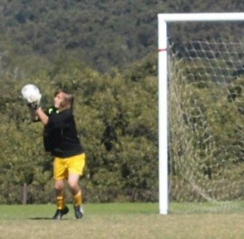

| Match Report - 09 May 2009 |
|
|
|
|
|
|
|
| U6 Purple |
North Ryde 1 - Gladesville Ravens 8

|
|
|
|

It was an early start for all at Magdala. Dad's Graeme &
Dave were in charge of the setting up of the mini's goals
... but ... we realised that when the next team arrived that we had the fields running
sidewards and were half the size! Not sure if that worked for us or against us? Mum
Leanne arrived with the wrong child and had to go home quickly
to find the other NRS player at her house! Needless to say, the 8:15am timeslot doesn't
work well for the cheer squad and we had much laughter together over the mornings events.
Now to the important topic, our little Purple team. Once again, they raced onto the
field smiling and excited. The glary sun proved to be a distraction through the game
to both teams, as players made funny shadow puppets. When the Purple's had the ball, we
saw much more cooperative play, with passing of the ball to the other team players. The
team has mastered the new technique of kicking the ball out of play to prevent the other
team scoring the goal. That ball was flying over the line everywhere - great saves!
It was a slow start, but the second half brought success, with a kick in from
Cameron to Lukah scoring our goal.
The team celebrated with high fives all round and dancing. What a beautiful sight seeing
our preschoolers enjoy the game so much. Lucas attacked the
ball well this week, making a couple of goal saves. Will and
Jasmine were great on defence, with Jayden
jumping in later as well.
Great effort everyone!
Congratulations to the Player of the Week - Cameron.
- Sally Last (Supermum)
|
|
|
| U6 Red C |
North Ryde - Ryde Saints United B

|
|
|
|
I think the other team kicked it and then I kicked it into the goal from far away.
Vivek kicked a goal.
- Fletcher Gusse (Player, aged 5)
|
|
|
| U7 Red A |
|
North Ryde 7 - Putney Rangers B 2
|
|
|
|
The game was another of two halves, with our boys running in an unanswered five goals
in the 1st half, and then Putney coming back with two to our three in the 2nd.
Again Aden was strong up front, pumping in six of our goals He was ably supported by
Alex W, who got his 1st for the season, and Arlen supported well in the mid field.
Alex C and Alex G played well both up front and at the back, with some good strong
line balls up to Aden. Troy, our strength in defence, kept things under control at
the back.
Our 'Best Ball Skills' certificate went to Troy, the 'Best Team Player' certificate
was taken by Alex W. Our best all rounder trophy went to Aden

- Rob Wylie (Coach)
|
|
|
| U7 White |
|
North Ryde 3 - All Saints H/Hill C 6
|
|
|
|
The North Ryde team arrived perky and fresh like the sterling Autumn morning we woke
up to. A couple of the boys, Angus & Ben, had had a big warm up, having already played
in matches earlier in the morning. The rest of the team were very keen to get stuck in.
The Hunters Hill All Saints were in fine form and, despite some excellent team work by
North Ryde, quickly found themselves with a 3-0 lead. Their goal kick up the sidelines
found its way into the Hunters Hill goal once again, and North Ryde were looking at an
almost insurmountable 4-0 disadvantage.
A quick word from Coach Wayne and Manager Bill and the team spread out and some amazing
field defense by William was lovely to watch. A long pass down the side from Raphael
found its way to Henry and Hugh and GEE!! It was a close shave, but to no avail.
The boys in orange grouped in and defended their goal too well... the slight downhill
advantage to Hunter's Hill proved too much and half time saw us sitting at 5-0.
Manager Bill and Coach Wayne got the team hyped up for the second half and in spite of
not having any oranges for half time (I can't apologise enough! I hope William recovered
and got his trip to Macca's?) the team rallied and seemed to be champing to get into
the second half. Tactics were to spread out, concentrate on where the ball was going,
and to use the side lines for passing & traveling to the goal end.
North Ryde now had the downhill advantage and used it. A beautiful, strong & true kick
in from Hugh resulted in our first goal for the day and you probably heard us cheering
over the froth of your Cox's Road cappuccino. Play resumed and a very close call after
a kick-in from Raphael was followed by some lovely passing by Jason. Good defense from
Angus saved the next goal attempt by Hunters Hill. The ball went straight back down the
side lines as coached, a lovely pass to Hugh from Henry and YES! Our second goal!
It was a ding-dong battle after that with play going backwards and forwards. Ben Lau
came on after being rested (deservedly) and contributed to yet another lovely glide
down the side lines to Henry who once again passed to Hugh for a tricky goal delicately
woven through thick Hunters Hill defense. 5-3. Winning could be on the cards...
Great foot work from Hugh and Henry saved a goal attempt by Hunters Hill, but their
next one, it has to be said, was a great goal from just under the halfway line. The
score now 6-3. Our team valiantly battled on and the game finished just as Raphael
shot a beautiful ball up the near side line.
Full time score: 6 - 3 to Hunters Hill All Saints - well done everyone.
Man of the Match went to Henry.
- Sandie Barnes (Parent)
|
|
|
| U8 White |
|
North Ryde 1 - West Ryde Rovers 4
|
|
|
|
This week we saw a much approved effort with a lot more skill shown by all of the
players. The final score ended up being 4 - 1 to the opposition but didn't reflect
the effort shown by the North Ryde team.
North Ryde dominated the first half with some great attacking play and led at the
break 1 - 0. Salim showed he has some real strike power
with the first goal of the season. We were unlucky not to be leading by more with
Hayley, James and
Zane also having shots at goal. Lioda
put into practice what she has learnt at training by always finding free space and
looking for others to pass to. Jack made some great goal
saves including one that caught him in the face!!
This was a game of 2 halves with West Ryde scoring all the 2nd half goals. Our goalie
Austin was put under a lot of pressure and but still came
up with 5 fantastic saves. Christian,
Will and Connor worked hard on
defence and kept the score lines even for most of the half.
Player of the day this week went to Hayley who was everywhere.
She set up her team mates with some smart passing and showed she has some great ball
skills and speed to burn. With a bit more training and working on our passing skills
and finding space the first win is not far away.
- Lee Crafar (Coach)
|
|
|
|
|
|
There are three words to describe today's match... Entertainment! Entertainment!
Entertainment! With a full team of 12, Jett, Jack & Charlie were first subs and watched
eagerly from the sideline waiting to get onto the field and get amongst the action.
We started with good pressure up the front from the strikers Shannon and Eli. Anthony in
midfield and David in the back combined to push the ball through and create opportunities
- a corner on this occasion. Eli fed the ball beautifully to Adam who had a strong shot
at goals, Shannon was in perfect position ready for the 'scraps' but a tidy save by the
keeper left nothing for him.
Patrick then had a shot at the goal, Shannon again ready for the 'scraps' had a shot, Adam
also had a shot but struck the post. Another attempt at goals by Shannon - no luck again
- we sense it was going to happen soon!
David fed up the wing with great power and Shannon popped it in the net... Hooray, the
crowd cheered, we love to watch our team of boys do what they do with thought and passion
and their combined talents and skills.
Tom Maclean and Tom Hurst - what an awesome combination to create our defence. An absolute
pleasure to see these two boys in action! Tom Maclean cleared the ball from the back to
David in the mid who pushed it up the wing. A back pass wide of the goals from Eli to
Patrick who passed to Shannon saw another attempt at goals, but the goal post got in the
way again!
Harrison was doing a fantastic job in goals using his height and strength to secure the
goals and solid in defence to take the pressure off the team on many occasions.
We're up by 1 goal when Glenhaven struck from a corner! More attempts at goal from
Charlie, Shannon and Eli - the crowd is cheering, what great soccer to watch. Then
Adam converts! That's 2-1. Patrick is very consistent today and works tirelessly and
effortlessly in the midfield.
A quiet start to the second half. Jack and Jett are strikers now and get straight into it.
Jack takes a great shot across the face of the goal. Jett has a shot but it powered left
of the post. Adam takes a throw in and Jett puts it into the back of the net - go Jett!
A tense moment in goals, David clears it... phew! Jack feeds the ball to Jett who runs
to goal and his shot flies right of the post. Charlie takes a corner, a bit of washing
machine stuff at the goal front and Jett then converts! Adam takes a throw in, Jack
takes up to goal, attempt goes straight to goalie... so close!
The end result was 5-1 and ALL boys played well and enjoyed their soccer today.
Now that's entertainment!
- Cindy Berghofer (Manager)
|
|
|
|
|
|

What a magnificent day for a game. Holy Cross had drawn with the team that beat us
6-1 last week so we knew we were in for a tough game.

Whilst they were "camped out" at our end of the field for most of the first half we
had limited their chances with some strong defending. It was only an unlucky goal
from a goal kick just on half time that saw us go in one goal down.
As the second half got underway our team were all fighting hard for possession but the
second half was going much the same way as the first & Holy Cross quickly went 4-0 up.
What happened next was a great sight. North Ryde started throwing caution to the wind
& threw more players forward.
Hamish took more of an attacking role from midfield & was causing Holy Cross all sorts
of problems. With more support Oscar started becoming a nuisance as well.
Ultimately the attacking paid dividends with North Ryde taking the initiative & Oscar
& Hamish scoring goals. We were set for an exciting finish but Holy Cross managed to
hang on for a win.
- Allan Ball (Coach)
|
|
|
|
|
|
What a sparkling day it was on Saturday morning seeing our mighty team back at James
Henty 2 playing against Hills Hawks. I do believe all of our cars are now on auto pilot
for this ground. Players and parents were enthusiastic and raring to go when the whistle
blew. Lucy and Maggie kicked off with some 'striker' girl power and the Hawks flew.
Swooping on every available ball saw the Hawks attacking over and over in the first
few minutes with our goalie Julian making save after save. What pressure he was under
and how wonderfully he handled it. Saxon was a demon with great defending up the side
and had a great attempt at goal early on in the first half. Chris was zipping all over
the place and Benyad , Ben, Josh and Tim were in there boots and all. Alas, the Hawks
wore our team down to get 2 well-deserved goals in the first half.
Second half saw our mighty Brooke fly in to action with some terrific defence and taking
a few tumbles with Massie and Luke backing up and Chris in goal. It was a fast start
with our strikers closer to the goal and providing some nail-biting times for the
parents. Much cheering from the sideline as more great saves were made from our second
half goalie Chris. Massie was unfortunate to miss with a goal attempt and the Hawks
swooped for another, which brought them to a clear lead. Well done to everyone. You are
improving every week and starting to really think about your positions. Most importantly
you are having fun.
Player of the match went to Julian.
Final score: NRS 0 - Hills Hawks 3
- Annie Miller (Manager)
|
|
|
|
|
|
Another fantastic game to watch by our boys. All the team put in for today's
performance and they were well rewarded with a good win over a strong team (and we
had no subs again!)
Morgan continued to display that never-give-up spirit and
first-to-the-ball skills. Cameron remained our solid centre
back not only defending well but also putting in with strong, long and deep defensive
kicks away from the goal area. Matia ran well all game and
provided good strong defense on the left. Josh ran all the
first half on the wing creating plenty of opportunities, as well a being very strong
in goals in the second half.
Christian played a strong, composed game - he is going from
strength to strength both in the goals and on the pitch. Alex
had his first full game in the mids and ran the whole time, covering lots of ground,
and getting lots of balls through to the forwards. Jay was
very strong in both defense and attack all game closing the centre down lots of times
and putting through some really beautiful balls to forwards as well.
Aymon (our man of the match) played very strong, contested
every ball and really put his strong kicks to the best use. Lukas
dazzled us with his footwork and skill on the ball once again.
Mitchell and Jackson brought
everything together up the front with their best display this year of working together
- they followed-up on the ball, and had that never-give-up attitude (well done both of you).
All the boys have been putting a lot of focus and effort into their training and it's
really nice to see this paying off on the weekends. Well done to everyone, see you on
Wednesday at training.
- Phil Butler (Coach)
|
|
|
|
|
|

Despite the scoreline this was a very good effort by the team as a whole, with improved
marker defence and commitment by the whole team.
Glenhaven got off to a flying start scoring a quick opening goal and jumped to a 2 Nil
lead before our boys replied with an excellent goal by Tim B to bring the score back
to a goal difference.

Our boys then pressed for an equaliser,however a couple of
blatant missed off side calls by the referee allowed Glenhaven a further 2 goals in
the first half against the run of play. A further goal to Stephen B-H saw the boys go
to half time with an undeserved 4 goals to 2 deficit.
The second half was hard fought and the team held Glenhaven scoreless for the first
25 minutes of the half until the final 10 minutes when Glenhaven's advantage in fresh
replacements saw them score a further 3 goals against a tiring team.
There were some strong efforts by all players on the day, Liam T and Sam B tried
tirelessly and often turned defence into attack. Jordan C & Regan C both played
themselves to a standstill and never stopped trying.
Stephen B-H showed his finishing
style with a well taken goal. Matt U and Lewis B also played determinely. Leo W once
again did all that was asked of him in defence and has put in 2 strong games.
William
G was solid in goals (despite the scoreline) making several strong saves (17) often
worrying the attacking team into error by his positive decision making and well timed
advances to the attacking players, his ball disposal was also first rate.
Well played boys a win is just around the corner if we have a continued commitment
toward attendance and attitude toward training.
- Bill Greer (Manager)
|
|
|
|
|
|
With the boys on a winning streak and fairly injury free (aside of the moans and groans
every Sunday morning), the Nth Ryde boys looked eager and ready to take on and conquer
the next opposition. The only flaw this week was that Mark Hesse was sporting a very
nasty case of the flu and Carl was still not 100% ready to run on for a full game.
The gods had given us a glorious soccer afternoon at Magdala and the crowd was ready
for an exciting match, West Pennant Hills always play out a good game with Nth Ryde.
Would Nth be able to give the crowd what they had come for - a win?
The game started with the usual fast pace, at their age you think the boys would know
how to handle nerves by now! Nth applied the early pressure and Ando had a meagre shot
on goal which found the keeper. Hang on - missing child back soon!
Ok, child located back to the soccer, the game had changed and WPH had the upper hand,
there was a big shot by the WPH forward which went like a rocket - Agro pulled off a
great save. WPH then had a corner and immediately another corner as Nth scrambled to
defend. They did a great job and were soon blasting into the WPH half. The next few
plays would see some Ronaldo like moments from players such as Ando, and Macca, who
both thought they could fire rockets at the keeper from 30m out! No luck however for
both of them as the ball speed was about 90% less than when Ronaldo strikes a ball!
Col then decided he would join the Ronaldo show and he also found the keeper! You're
not playing for Man United boys!
Finally Pierre had a genuine shot on goal which the keeper saved by his fingertips.
The ensuing corner unfortunately amounted to nothing - no one was waiting in the box!
The play continued to build until Firgs put a great ball through that Pierre headed,
the ball fell short and it was a shame that Pommie had bought his two left feet and
tripped over the ball! Nth Ryde was definitely gaining the upper hand. There was a few
choice words being exchanged out on the park and Karim got fiery with a very vocal
player. They both received yellow cards for their efforts and Karim had some time on
the bench to cool down. Half time 0-0.
The 2nd half started with only a few changes. Nth continued to have the lion's share
of possession early, Higgo put a great ball through to the waiting Pierre who put it
into the back of the net, 1-0 Nth Ryde. Pierre then showed us that his shoulder had
completely recovered by celebrating the goal with a forward roll! I think he plays
with his kids too much! Play got underway and Macca then had a WPH player ‘run into
him', honestly he didn't trip anybody ref! He did receive a yellow card for his
efforts though, perhaps the ref - who mind you was on the spot, saw something we
didn't? Thankfully the resulting free kick did not find its target! Play then turned
back to Nth Ryde's favour and Col had a great shot on goal that the keeper saved by
the end of his fingertips. The midfield were playing brilliantly and putting some
great balls through to feet. Matt S, Ando, Karim and Col had things well under
control. Matt S then had a chance which had the crowd sighing when he missed. Ando
then made another half attempt at scoring from a header but found the keeper waiting.
There were lots more push and shove and things were getting hot, the ref kept the
game under control. All of sudden up popped a sniper from the bushes at Magdala and
Ado went down lick a big sack of potatoes. What happened, we were all asking, it was
so funny! Carl then came on to make his return to the 2009 season. He looked spritely
and ready.
Meanwhile the girls were enjoying the champagne, sunshine and football. Nth Ryde had
a few more shots on goal but managed to keep WPH scoreless and win 1-0! I'm sure Agro
has some bruises he hadn't accounted for before the game! Well done boys, let's keep
it up!
- Lhan Gannon (Official Observer)
|